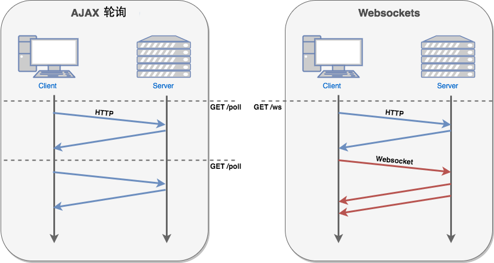

HTML5 WebSocket
WebSocket は、HTML5 から提供される、単一の TCP 接続上で全二重通信を行うプロトコルです。
WebSocket により、クライアントとサーバー間のデータ交換がより簡単になり、サーバー側からクライアントへ能動的にデータをプッシュできるようになります。WebSocket API では、ブラウザーとサーバーは一度のハンドシェイクを完了するだけで、両者間で永続的な接続を直接作成し、双方向のデータ転送を行うことができます。
WebSocket API では、ブラウザーとサーバーはハンドシェイクを行うだけで、両者間に高速な経路が形成されます。これにより、両者間で直接データを相互に送受信できます。
現在、多くの Web サイトがプッシュ技術を実現するために、Ajax ポーリングという技術を使用しています。ポーリングは特定の時間間隔（たとえば毎秒 1 回）でブラウザーがサーバーに HTTP リクエストを送信し、サーバーが最新データをクライアントのブラウザーに返すというものです。この従来型のモデルには明らかな欠点があります。ブラウザーは絶えずサーバーにリクエストを送信する必要がありますが、HTTP リクエストには長いヘッダーが含まれる可能性があり、その中で実際に有効なデータはごく一部に過ぎないため、明らかに多くの帯域幅などのリソースを浪費します。
HTML5 で定義された WebSocket プロトコルは、サーバーリソースと帯域幅をより節約でき、よりリアルタイムな通信が可能です。

ブラウザーは JavaScript を介してサーバーに WebSocket 接続の確立を要求します。接続が確立されると、クライアントとサーバーは TCP 接続を介して直接データを交換できます。
WebSocket 接続を取得したら、send()メソッドを使用してサーバーにデータを送信し、またonmessageイベントを使用してサーバーから返されたデータを受信できます。
以下の API は WebSocket オブジェクトを作成するために使用されます。
var Socket = new WebSocket(url, [protocol] );
上記のコードの最初のパラメータ url は接続先の URL を指定します。2 番目のパラメータ protocol は省略可能で、受け入れ可能なサブプロトコルを指定します。
WebSocket プロパティ
以下は WebSocket オブジェクトのプロパティです。上記のコードを使用して Socket オブジェクトを作成したと仮定します：
| プロパティ | 説明 |
|---|---|
| Socket.readyState | 読み取り専用プロパティreadyState接続状態を表し、次の値のいずれかです：
|
| Socket.bufferedAmount | 読み取り専用プロパティbufferedAmountsend() によって送信待ちキューに入れられたが、まだ送信されていない UTF-8 テキストのバイト数です。 |
WebSocket イベント
以下は WebSocket オブジェクトに関連するイベントです。上記のコードを使用して Socket オブジェクトを作成したと仮定します：
| イベント | イベントハンドラー | 説明 |
|---|---|---|
| open | Socket.onopen | 接続が確立されたときに発生します |
| message | Socket.onmessage | クライアントがサーバーデータを受信したときに発生します |
| error | Socket.onerror | 通信中にエラーが発生したときに発生します |
| close | Socket.onclose | 接続が閉じられたときに発生します |
WebSocket メソッド
以下は WebSocket オブジェクトに関連するメソッドです。上記のコードを使用して Socket オブジェクトを作成したと仮定します：
| メソッド | 説明 |
|---|---|
| Socket.send() | 接続を使用してデータを送信する |
| Socket.close() | 接続を閉じる |
WebSocket インスタンス
WebSocket プロトコルは、本質的に TCP ベースのプロトコルです。
WebSocket 接続を確立するために、クライアントブラウザーはまずサーバーに HTTP リクエストを送信します。このリクエストは通常の HTTP リクエストとは異なり、いくつかの追加ヘッダー情報が含まれています。その中の追加ヘッダー情報「Upgrade: WebSocket」は、プロトコルのアップグレードを申請する HTTP リクエストであることを示します。サーバー側はこれらの追加ヘッダー情報を解析し、応答メッセージを生成してクライアントに返します。これにより、クライアントとサーバー間の WebSocket 接続が確立され、双方はこの接続チャネルを通じて自由に情報を送受信できます。また、この接続は、クライアントまたはサーバーのどちらかが能動的に接続を閉じるまで持続します。
クライアント側の HTML と JavaScript
現在、ほとんどのブラウザーは WebSocket() インターフェースをサポートしています。次のブラウザーでインスタンスを試すことができます：Chrome、Mozilla、Opera、Safari。
runoob_websocket.html ファイルの内容
<!DOCTYPE HTML>
<html>
<head>
<meta charset="utf-8">
<title>菜鸟教程(runoob.com)</title>
<script type="text/javascript">
function WebSocketTest()
{
if ("WebSocket" in window)
{
alert("您的浏览器支持 WebSocket!");
// 打开一个 web socket
var ws = new WebSocket("ws://localhost:9998/echo");
ws.onopen = function()
{
// Web Socket 已连接上，使用 send() 方法发送数据
ws.send("发送数据");
alert("数据发送中...");
};
ws.onmessage = function (evt)
{
var received_msg = evt.data;
alert("数据已接收...");
};
ws.onclose = function()
{
// 关闭 websocket
alert("连接已关闭...");
};
}
else
{
// 浏览器不支持 WebSocket
alert("您的浏览器不支持 WebSocket!");
}
}
</script>
</head>
<body>
<div id="sse">
<a href="WebSocketTest().html">运行 WebSocket</a>
</div>
</body>
</html>
pywebsocket のインストール
上記のプログラムを実行する前に、WebSocket をサポートするサービスを作成する必要があります。pywebsocketmod_pywebsocket をダウンロードするか、git コマンドを使用してダウンロードしてください：
git clone https://github.com/googlearchive/pywebsocket <p> mod_pywebsocket 需要 python 环境支持</p> mod_pywebsocket 是一个 Apache HTTP 的 Web Socket扩展，安装步骤如下：</p> <ul> <li><p>解压下载的文件。</p></li> <li><p>进入 <b>pywebsocket</b> 目录。</p></li> <li><p>执行命令：</p> <pre>$ python setup.py build $ sudo python setup.py install
ドキュメントの説明を参照してください：
$ pydoc mod_pywebsocket
サービスの開始
にpywebsocket/mod_pywebsocketディレクトリで次のコマンドを実行します：
$ sudo python standalone.py -p 9998 -w ../example/
上記のコマンドは、ポート番号 9998 のサービスを開始します。-w を使用して、ハンドラー echo_wsh.py が置かれているディレクトリを設定します。
次に、先ほど作成した runoob_websocket.html ファイルを Chrome ブラウザーで開くことができます。ブラウザーが WebSocket() をサポートしている場合は、「WebSocket を実行」をクリックすると、プロセス全体の各ステップでポップアップ表示されるウィンドウを確認できます。プロセスの Gif デモ：

サービスを停止すると、「接続が閉じられました...」とポップアップ表示されます。
その他の拡張
0o3
234***242934@qq.com
参考リンク
Websocket は ws または wss の URI（統一資源識別子）を使用します。これは HTTPS に似ており、wss は TLS 上の Websocket を表します。例：
Websocket は HTTP と同じ TCP ポートを使用するため、ほとんどのファイアウォールの制限を回避できます。デフォルトでは、Websocket プロトコルはポート 80 を使用します。TLS 上で実行する場合は、デフォルトでポート 443 を使用します。
典型的な Websocket ハンドシェイクリクエストは次のとおりです：
クライアントのリクエスト
サーバーの応答
サーバー側については、インターネット上には Websocket をサポートするさまざまなサーバーがあります：
0o3
234***242934@qq.com
参考リンク
嫌な団子蜀
mrf***uan@hotmail.com
WebSocketについて言えば、socketとの違いについて説明する必要があると思います。
ソフトウェア通信には七層構造があり、下位三層はデータ通信に重点を置き、上位三層はデータ処理に重点を置いています。中間のトランスポート層は上位三層と下位三層を結ぶ橋渡しの役割を果たし、各層は異なる仕事を行い、上位層のプロトコルは下位層のプロトコルに依存しています。この通信構造の概念に基づいています。
Socketは実際にはプロトコルではなく、アプリケーション層とTCP/IPプロトコル群との通信を行う中間ソフトウェア抽象層であり、一連のインターフェースです。2台のホストが通信する際、Socketにデータを整理させ、指定されたプロトコルに適合させます。TCP接続はより下位のIPプロトコルに依存しており、IPプロトコルの接続はリンク層などのより低い層に依存しています。
WebSocketは典型的なアプリケーション層プロトコルです。
まとめると、Socketはトランスポート制御層のプロトコルであり、WebSocketはアプリケーション層のプロトコルです。
嫌な団子蜀
mrf***uan@hotmail.com